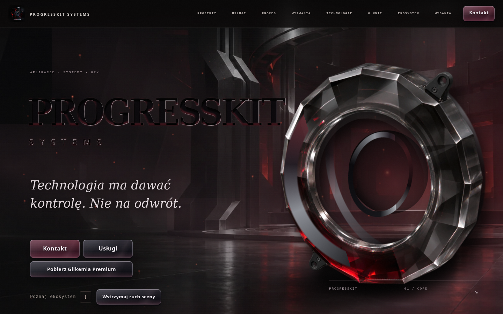
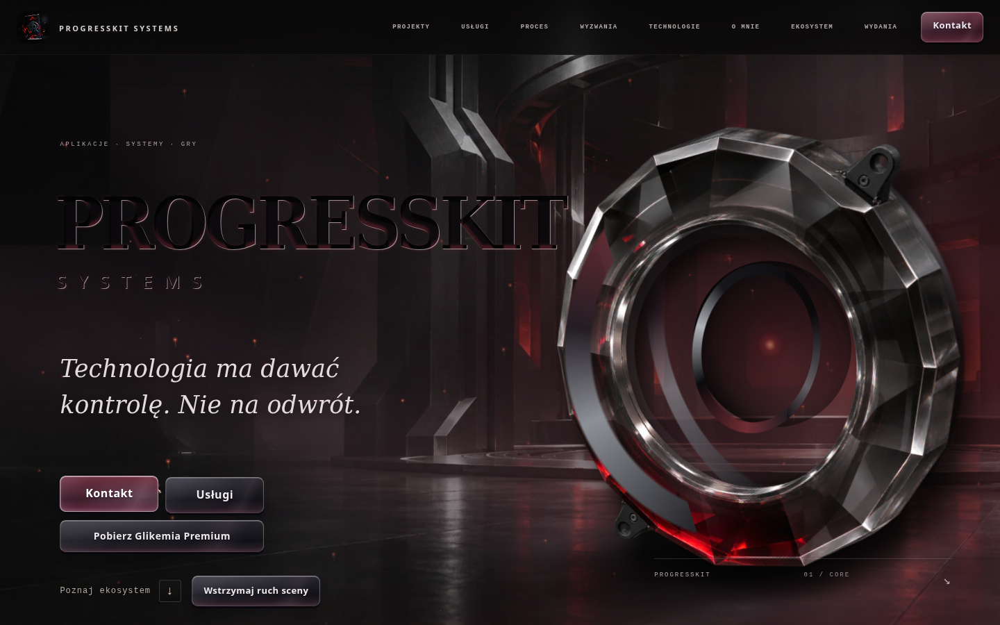
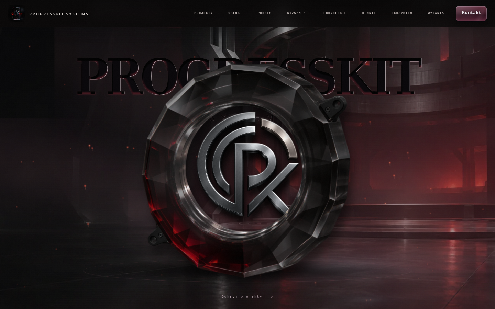
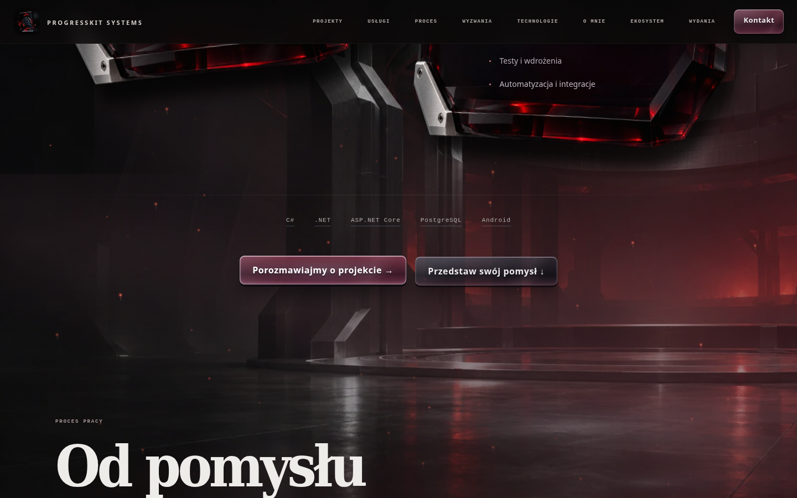
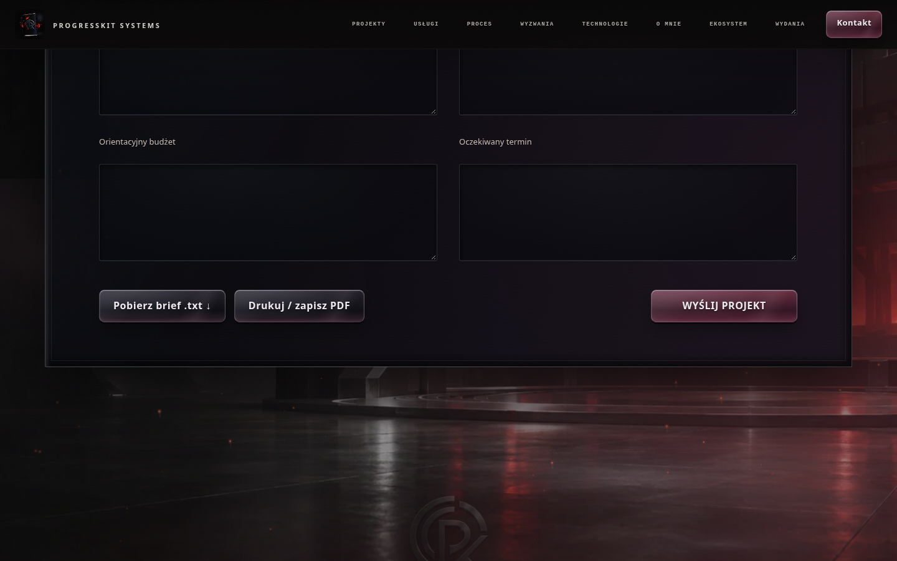
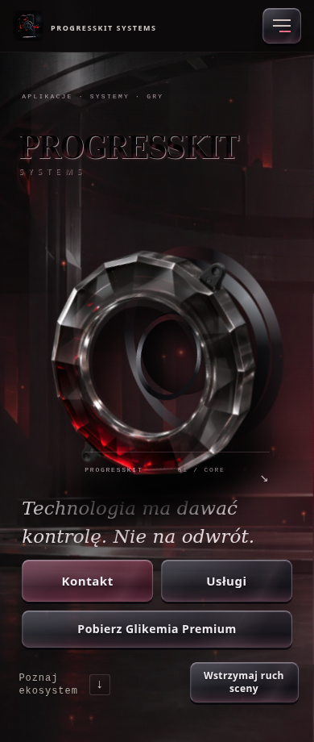
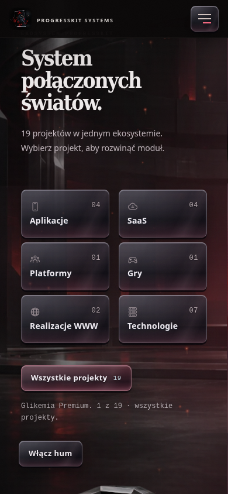
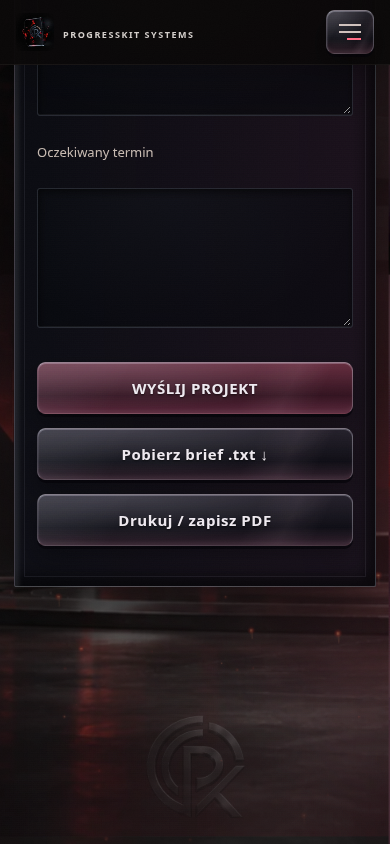
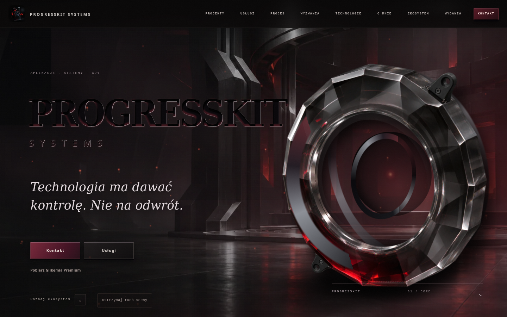
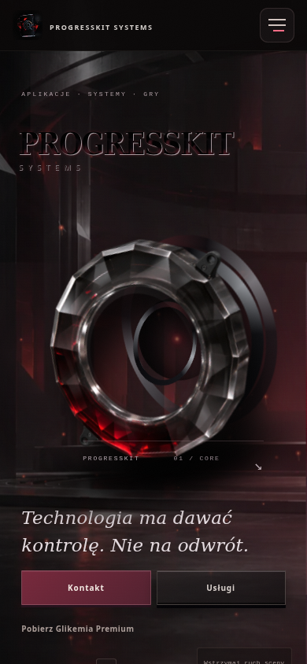

LOKALNY PROOF · 03.11.2026 · ownerVisualApproval: OPEN
Premium living pass
Jedna atmosfera świata i jeden system szklanych przycisków. Desktop: spokojny ruch światła, mgły i odbić, większa głębia pod kursorem. Mobile: zachowany kierunek, czytelniejsze CTA i filtry.
Materiały z rzeczywistego lokalnego Chrome. Mobile to emulacja dotyku 390 × 844, bez testu na fizycznym telefonie. Odbiór wizualny pozostaje otwarty. Bez commita, pushu i publikacji.
Mobile · 390 × 844
Pobierz nagranie MP4Aktualny wygląd
















Stan przed korektą przycisków
Zdjęcia bazowe z początku tego zadania. Nagrania powyżej pokazują aktualny ruch i interakcje.




Kontrola zakresu
Dokładna zawartość body 23 wygenerowanych stron zachowana. Katalog, statusy, analytics i logika case studies bez zmian. Szczegóły: porównanie treści i hashy, pomiar wydajności, sumy kontrolne.